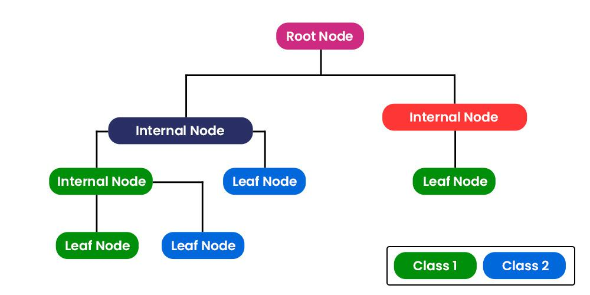
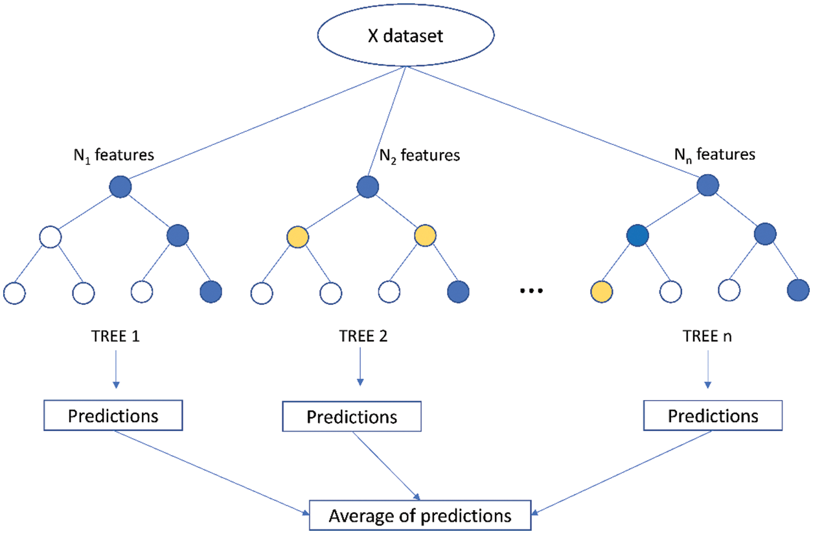
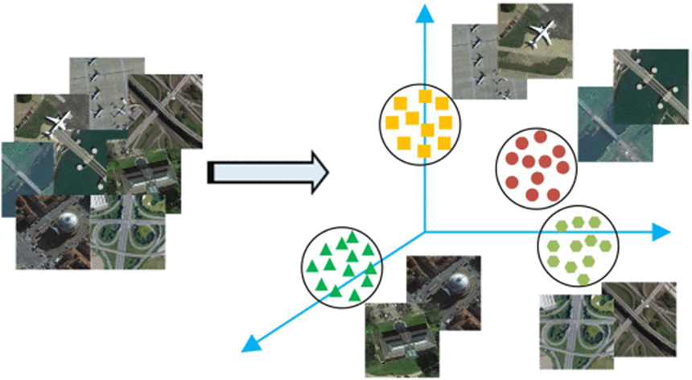
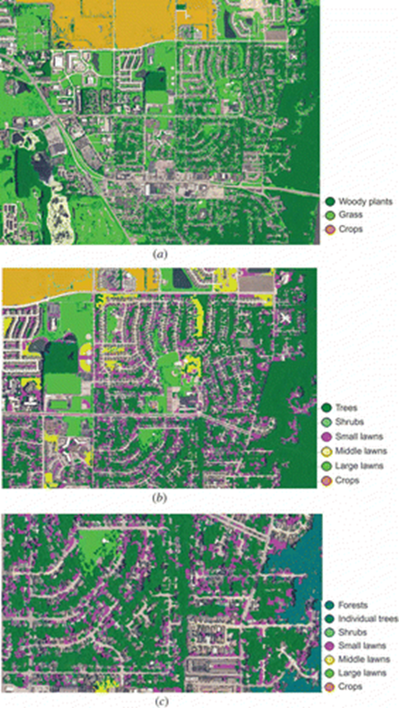

Week 6 - Classification I
6.1 Summary
How do you do that given some imagery?
Inductive learning - using experience to make judgments in a given context.
Expert systems - using human knowledge to solve problems that require human intelligence.
Knowledge Base - rules of thumb, not always correct.
Inference Engine - process of reaching a conclusion and the expert system is implemented.
Machine Learning - the use of statistical techniques to enable computers to “learn” data and then use that data to make predictions or decisions.
Classification and Regression Trees (CART).
Categorical trees - data are two and more discrete dependent variables.
Regression tree - continuous dependent variable (data divided into very small chunks).

(Source: CART (Classification And Regression Tree) in Machine Learning, 2023)
In the decision tree, nodes are split into sub-nodes based on a threshold value of an attribute. The root node is taken as the training set and is split into two by considering the best attribute and threshold value. Further, the subsets are also split using the same logic. This continues till the last pure sub-set is found in the tree or the maximum number of leaves possible in that growing tree.
Tree structure: CART builds a tree-like structure consisting of nodes and branches. The nodes represent different decision points, and the branches represent the possible outcomes of those decisions.
Splitting criteria: Selects the one that best reduces the impurity of the resulting subsets. For classification tasks, CART uses Gini impurity as the splitting criterion. The lower the Gini impurity, the more pure the subset is. For regression tasks, CART uses residual reduction as the splitting criterion. The lower the residual reduction, the better the fit of the model to the data.
Pruning: To prevent overfitting of the data. Cost complexity pruning involves calculating the cost of each node and removing nodes that have a negative cost.
Random Forest - Construct multiple decision trees and summarize their predictions

(Source: Tran, et al., 2023)
Out-of-Bag (OOB) refers to the data samples that were not selected by bootstrap sampling in the construction of each decision tree.
Random Forest Algorithm Steps
- Bootstrap sampling - repeated samples from the original data.
- When constructing each split node of each tree, the algorithm randomly selects a subset of features from the full set of features. The size of the selected subset of features is usually fixed.
- Randomization of node segmentation: at each node of the decision tree, a subset of features is again randomly selected.
- Repeat! We’ll get a forest of trees.
Image Classification
Supervised - in supervised learning, an algorithm learns using a set of training data that has been labeled.
Maximumlikelihood classification - prior knowledge of the category (i.e., prior probability of the category).
Unsupervised - unsupervised learning does not use labeled training data. Instead, it attempts to learn patterns directly from the data itself and is commonly used for tasks such as clustering or dimensionality reduction.
K-mean clustering - discovers patterns or clusters in the data by dividing the images into K categories.
ISODATA - which adaptively adjusts the number of clusters based on the actual distribution of the data.
Support Vector Machine (SVM)
Linear binary classifier, used to classify data points into two categories.
Maximum Margin - the boundary that provides the maximum interval between the two categories.
Support Vector - Points on (and within) the boundary.
Different parameters are used to control the model’s tolerance for misclassification.
Hyperparameters like C and Gamma (or Sigma) control SVM wiggle.
Hard versus soft margins.
6.2 Application
Remote sensing image scene recognition is the process of accurately labeling specific remote sensing images according to established semantic categories. Research on remote sensing image scene categorization has made significant progress due to the needs driven by application areas such as urban planning, disaster prevention, environmental monitoring and vegetation assessment.

Remote sensing image scene classification（Source, Cheng, et al., 2020）
- Urban planning
Longbotham, et al. (2012) optimized the performance of a classifier using multi-angle and multi-spectral imagery provided by the WorldView-2 satellite in combination with elevation data as well as textural, morphological and spectral features of the images. This approach effectively improves the accuracy of identifying and classifying urban elements, especially those urban features that are difficult to distinguish in a single image, thus highlighting the critical role of image classification in resolving complex urban environments.
- Disaster monitoring
In a study by Cheng, et al. (2013), a new technique for automatic landslide identification using remotely sensed images was proposed. The technique incorporates a bag of visual words (BoVW) model, unsupervised probabilistic latent semantic analysis (pLSA), and a k-nearest neighbor (k-NN) classifier to identify landslide areas. In the study, the remotely sensed images were divided into sub-image blocks of the same size and described using the BoVW model, landslide-related features were extracted by the pLSA model, and finally the k-NNN classifier was applied to classify the sub-image blocks into landslide and non-landslide. In the remote sensing image test in Yili area, the method proved to be effective in detecting landslides even in the absence of 3D terrain data, which is significant for landslide hazard mapping and risk assessment.
- Environmental monitoring
Zhang and Hunag (2018) This study uses high-resolution multi-temporal data to delve into the changing landscape of urban impervious surfaces. Taking the rapidly urbanizing city of Shenzhen as an example and combining QuickBird, WorldView-2 and WorldView-3 satellite images, the researchers developed a method that fuses multiple features to successfully identify and track changes in impervious surfaces. The study emphasizes the importance of high-resolution imagery in monitoring changes in impervious surfaces during urban development.
- Vegetation analysis
Li and Shao (2018) study proposed a high-precision classification technique for urban vegetation that effectively integrates spectral, spatial, and geometric information by utilizing 1-meter-resolution four-band digital aerial photography data and combining hierarchical classification with four segmentation techniques. This method does not require other auxiliary data and proves its usefulness in effectively recognizing various types of urban vegetation.

Classification result at different levels and the categories shown in different colours (Source: Li and Shao, 2018).
Future Trends
Cheng et al. (2020) investigated several potential trends in remote sensing image scene recognition that may be developed in the future, including improving discriminative feature learning, multi-scale feature learning, multi-label classification, constructing large-scale datasets, unsupervised learning, compact and efficient model design, and exploration of cross-domain classification techniques.
6.3 Refelection
So far, this class should be the most interesting content for me, classifying remote sensing images through the use of machine learning. Last semester, the last assignment for casa001 was to analyze the advantages and disadvantages of self-supervised learning for image classification, which I thought was just pretty interesting at the time, but the machine learning related algorithms involved were still complex enough to make me realize that scene classification can be challenging. I have studied binary trees in my undergraduate studies, so the knowledge related to classification and regression trees and random forests is very similar and easy to understand. Recently, I have been reading a lot of literature to complete my thesis proposal, and many papers use machine learning models to predict. I hope I can also learn to apply machine learning methods such as random forests in my thesis.
6.4 References
CART (Classification And Regression Tree) in Machine Learning (2023) Available at: https://www.geeksforgeeks.org/cart-classification-and-regression-tree-in-machine-learning/ (Accessed: 7 March 2024).
Cheng, G., Guo, L., Zhao, T., Han, J., Li, H. and Fang, J. (2013) ‘Automatic landslide detection from remote-sensing imagery using a scene classification method based on BOVW and PLSA’, Internal Journal of Remote Sensing, 34(1/2), pp. 45-59.
Cheng, G., Xie, X. X., Han, J. W., Guo, L. and Xia, G. S. (2020) ‘Remote Sensing Image Scene Classification Meets Deep Learning: Challenges, Methods, Benchmarks, and Opportunities’, IEEE Journal of Selected Topics in Applied Earth Observations and Remote Sensing, 13, pp. 3735-3756.
Li, X. and Shao, G. F. (2013) ‘Object-based urban vegetation mapping with high-resolution aerial photography as a single data source’, Internal Journal of Remote Sensing, 34(3), pp. 771-789.
Longbotham, N., Chaapel, C., Bleiler, L., Padwick, C., Emery, W. J. and Pacifici, F. (2012) ‘Very high resolution multiangle urban classification analysis’, IEEE Transactions on Geoscience and Remote Sensing, 50(4), pp. 1155-1170.
Tran, Q., Nguyen, H. and Bui, X. (2023) ‘Novel Soft Computing Model for Predicting Blast-Induced Ground Vibration in Open-Pit Mines Based on the Bagging and Sibling of Extra Trees Models’, Computer Modeling in Engineering & Sciences, 134(3), pp. 2227-2246.
Zhang, T. and Huang, X. (2018) ‘Monitoring of urban impervious surfaces using time series of high-resolution remote sensing images in rapidly urbanized areas: A case study of Shenzhen’, IEEE Journal of Selected Topics in Applied Earth Observations and Remote Sensing, 11(8), pp. 2692-2708.